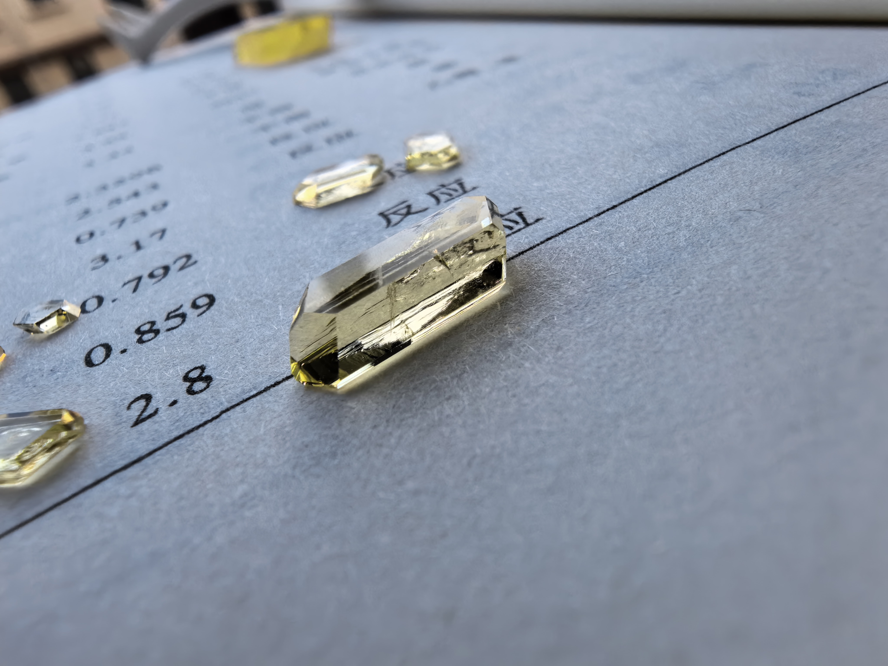
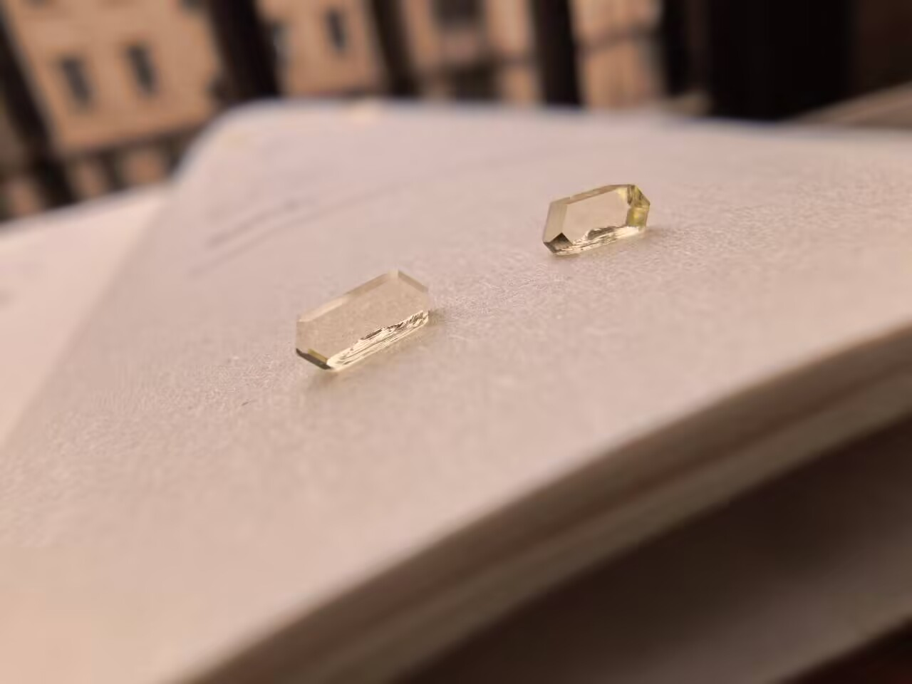

图源：紫色硫酸铜

化学式：无水乙酸钐为 Sm(CH3COO)3（亦写作 Sm(C2H3O2)3）；从水溶液中结晶得到的通常是四水合物 Sm(CH3COO)3·4H2O
简明配方：85 g 氧化钐加水混合后，加入 118 g 过量乙酸，加热一段时间，等反应差不多后加水稀释到 1000 mL，即可得到内含 160 g 乙酸钐的近饱和溶液。
喜欢这类专文？投稿你的晶体实拍或制备笔记，通过后可收录进作品集并为你署名图源。